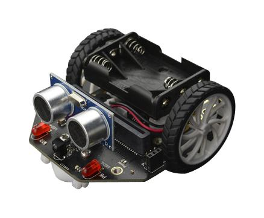

Ayuda a Mara en su aventura marciana
Task ten. ¡No quiero que me toques!
Caso práctico
Nuestra robot Mara está últimamente contenta y feliz.

Se la ve diligente en sus tareas. Aunque ya están establecidos en la cueva, Mara a veces se queda en el cohete recargando baterías... Y Nico y Mili saben que suele salir a ver las estrellas de noche. La verdad es que ellos también. La noche marciana es espectacular. La atmósfera, mucho más tenue que en la Tierra, dispersa menos la luz y las estrellas son más brillantes. Además, no existe la contaminación lumínica. ¡Es un espectáculo al que no se pueden resistir!
La otra noche, sin embargo, ocurrió algo curioso. Mientras Mara observaba las estrellas vio, en la lejanía, caer algo del cielo... Lenta y pausadamente, como si cayese un globo aerostático o un paracaídas. En la oscuridad no se distinguía bien. ¡ Y aterrizó justo a unos 500 metros en medio del camino de la nave a las cuevas !
Y Mara corrió hacia... Ello o ella o aquello que hubiese aterrizado. Se mantenía en silencio y a oscuras. Pero cuando estaba a punto de tocarle, encendió todas sus luces, emitió un sonido zumbante y... Movió sus aspas. ¡¡ Por favor !! - gritó - ¡No quiero que me toques! ¡Soy el Ingenuity! ¡El helicóptero del Perseverance!
| Mars Perseverance Rover: Your Most "Liked" Images 2021 (Dominio público). NASA | Mars Helicopter Prepares for Takeoff (Dominio público). NASA |
Rosco
2
Observe las letras, identifique y rellene las palabras que faltan.
%E9%B0%E6%EB%E2%F7%D5%F3%FF%F7%B0%A8%B0%C0%FD%E1%F1%FD%B0%BE%B0%FB%FC%E1%E6%E0%E7%F1%E6%FB%FD%FC%E1%B0%A8%B0%AE%E2%AC%DD%F0%E1%F7%E0%E4%F7%B2%FE%F3%E1%B2%FE%F7%E6%E0%F3%E1%BE%B2%FB%F6%F7%FC%E6%FB%F4%FB%E3%E7%F7%B2%EB%B2%E0%F7%FE%FE%F7%FC%F7%B2%FE%F3%E1%B2%E2%F3%FE%F3%F0%E0%F3%E1%B2%E3%E7%F7%B2%F4%F3%FE%E6%F3%FC%BC%AE%BD%E2%AC%B0%BE%B0%E6%FB%FF%F7%C1%FA%FD%E5%C1%FD%FE%E7%E6%FB%FD%FC%B0%A8%A7%BE%B0%F6%E7%E0%F3%E6%FB%FD%FC%D5%F3%FF%F7%B0%A8%AB%A2%A2%BE%B0%FC%E7%FF%F0%F7%E0%C6%E7%E0%FC%E1%B0%A8%A0%BE%B0%E1%FA%FD%E5%C1%FD%FE%E7%E6%FB%FD%FC%B0%A8%F4%F3%FE%E1%F7%BE%B0%E1%FA%FD%E5%DF%FB%FC%FB%FF%FB%E8%F7%B0%A8%E6%E0%E7%F7%BE%B0%FB%E6%FB%FC%F7%E0%F3%E0%EB%B0%A8%E9%B0%E1%FA%FD%E5%D1%FE%E7%F7%B0%A8%F4%F3%FE%E1%F7%BE%B0%F1%FE%E7%F7%D5%F3%FF%F7%B0%A8%B0%B0%BE%B0%E2%F7%E0%F1%F7%FC%E6%F3%F5%F7%D1%FE%E7%F7%B0%A8%A6%A2%BE%B0%E1%FA%FD%E5%D1%FD%F6%F7%D3%F1%F1%F7%E1%E1%B0%A8%F4%F3%FE%E1%F7%BE%B0%F1%FD%F6%F7%D3%F1%F1%F7%E1%E1%B0%A8%B0%B0%BE%B0%FF%F7%E1%E1%F3%F5%F7%D1%FD%F6%F7%D3%F1%F1%F7%E1%E1%B0%A8%B0%B0%EF%BE%B0%E5%FD%E0%F6%E1%D5%F3%FF%F7%B0%A8%C9%E9%B0%FE%F7%E6%E6%F7%E0%B0%A8%B0%D3%B0%BE%B0%E5%FD%E0%F6%B0%A8%B0%D3%E6%F7%E0%E0%FB%E8%F3%E0%B0%BE%B0%F6%F7%F4%FB%FC%FB%E6%FB%FD%FC%B0%A8%B0%C2%FD%E1%F3%E0%B2%E7%FC%F3%B2%FC%F3%E4%F7%B2%F7%FC%B2%FE%F3%B2%E1%E7%E2%F7%E0%F4%FB%F1%FB%F7%B2%F6%F7%B2%DF%F3%E0%E6%F7%B0%BE%B0%E6%EB%E2%F7%B0%A8%A2%BE%B0%F3%FE%E6%B0%A8%B0%B0%BE%B0%F3%E7%E6%FA%FD%E0%B0%A8%B0%B0%BE%B0%E7%E0%FE%B0%A8%B0%B0%BE%B0%F3%E7%F6%FB%FD%B0%A8%B0%B0%BE%B0%EA%B0%A8%A2%BE%B0%EB%B0%A8%A2%EF%BE%E9%B0%FE%F7%E6%E6%F7%E0%B0%A8%B0%D0%B0%BE%B0%E5%FD%E0%F6%B0%A8%B0%D0%F3%E6%F7%E0%7F%F3%B0%BE%B0%F6%F7%F4%FB%FC%FB%E6%FB%FD%FC%B0%A8%B0%D3%F1%E7%FF%E7%FE%F3%F6%FD%E0%B2%FD%B2%F1%FD%FC%F8%E7%FC%E6%FD%B2%F6%F7%B2%F3%F1%E7%FF%E7%FE%F3%F6%FD%E0%F7%E1%B2%F6%F7%B2%F7%FE%F7%F1%E6%E0%FB%F1%FB%F6%F3%F6%BC%B0%BE%B0%E6%EB%E2%F7%B0%A8%A2%BE%B0%F3%FE%E6%B0%A8%B0%B0%BE%B0%F3%E7%E6%FA%FD%E0%B0%A8%B0%B0%BE%B0%E7%E0%FE%B0%A8%B0%B0%BE%B0%F3%E7%F6%FB%FD%B0%A8%B0%B0%BE%B0%EA%B0%A8%A2%BE%B0%EB%B0%A8%A2%EF%BE%E9%B0%FE%F7%E6%E6%F7%E0%B0%A8%B0%D1%B0%BE%B0%E5%FD%E0%F6%B0%A8%B0%D1%FD%FE%F6%B0%BE%B0%F6%F7%F4%FB%FC%FB%E6%FB%FD%FC%B0%A8%B0%D7%FC%B2%FB%FC%F5%FE%7B%E1%BE%B2%F4%E0%7F%FD%BC%B0%BE%B0%E6%EB%E2%F7%B0%A8%A2%BE%B0%F3%FE%E6%B0%A8%B0%B0%BE%B0%F3%E7%E6%FA%FD%E0%B0%A8%B0%B0%BE%B0%E7%E0%FE%B0%A8%B0%B0%BE%B0%F3%E7%F6%FB%FD%B0%A8%B0%B0%BE%B0%EA%B0%A8%A2%BE%B0%EB%B0%A8%A2%EF%BE%E9%B0%FE%F7%E6%E6%F7%E0%B0%A8%B0%D6%B0%BE%B0%E5%FD%E0%F6%B0%A8%B0%D6%FB%FE%FB%F5%F7%FC%E6%F7%B0%BE%B0%F6%F7%F4%FB%FC%FB%E6%FB%FD%FC%B0%A8%B0%C2%E0%FD%FC%E6%FD%BE%B2%E2%E0%F7%E1%E6%FD%BE%B2%FE%FB%F5%F7%E0%FD%B2%F7%FC%B2%F7%FE%B2%FD%F0%E0%F3%E0%BC%B2%C6%F3%FF%F0%FB%7B%FC%B2%F1%E7%FB%F6%F3%F6%FD%E1%FD%BE%B2%F7%EA%F3%F1%E6%FD%B2%EB%B2%F3%F1%E6%FB%E4%FD%BC%B0%BE%B0%E6%EB%E2%F7%B0%A8%A2%BE%B0%F3%FE%E6%B0%A8%B0%B0%BE%B0%F3%E7%E6%FA%FD%E0%B0%A8%B0%B0%BE%B0%E7%E0%FE%B0%A8%B0%B0%BE%B0%F3%E7%F6%FB%FD%B0%A8%B0%B0%BE%B0%EA%B0%A8%A2%BE%B0%EB%B0%A8%A2%EF%BE%E9%B0%FE%F7%E6%E6%F7%E0%B0%A8%B0%D7%B0%BE%B0%E5%FD%E0%F6%B0%A8%B0%D7%FC%F1%F7%FC%F6%F7%E0%B0%BE%B0%F6%F7%F4%FB%FC%FB%E6%FB%FD%FC%B0%A8%B0%B2%DA%F3%F1%F7%E0%B2%E3%E7%F7%B2%F4%E7%FC%F1%FB%FD%FC%F7%B2%E7%FC%B2%F6%FB%E1%E2%FD%E1%FB%E6%FB%E4%FD%B2%FD%B2%E7%FC%B2%F3%E2%F3%E0%F3%E6%FD%B2%F7%FE%7B%F1%E6%E0%FB%F1%FD%B0%BE%B0%E6%EB%E2%F7%B0%A8%A2%BE%B0%F3%FE%E6%B0%A8%B0%B0%BE%B0%F3%E7%E6%FA%FD%E0%B0%A8%B0%B0%BE%B0%E7%E0%FE%B0%A8%B0%B0%BE%B0%F3%E7%F6%FB%FD%B0%A8%B0%B0%BE%B0%EA%B0%A8%A2%BE%B0%EB%B0%A8%A2%EF%BE%E9%B0%FE%F7%E6%E6%F7%E0%B0%A8%B0%D4%B0%BE%B0%E5%FD%E0%F6%B0%A8%B0%D4%FD%F0%FD%E1%B0%BE%B0%F6%F7%F4%FB%FC%FB%E6%FB%FD%FC%B0%A8%B0%C1%F3%E6%7B%FE%FB%E6%F7%B2%F6%F7%FE%B2%E2%FE%F3%FC%F7%E6%F3%B2%DF%F3%E0%E6%F7%BC%B0%BE%B0%E6%EB%E2%F7%B0%A8%A2%BE%B0%F3%FE%E6%B0%A8%B0%B0%BE%B0%F3%E7%E6%FA%FD%E0%B0%A8%B0%B0%BE%B0%E7%E0%FE%B0%A8%B0%B0%BE%B0%F3%E7%F6%FB%FD%B0%A8%B0%B0%BE%B0%EA%B0%A8%A2%BE%B0%EB%B0%A8%A2%EF%BE%E9%B0%FE%F7%E6%E6%F7%E0%B0%A8%B0%D5%B0%BE%B0%E5%FD%E0%F6%B0%A8%B0%D5%FB%E0%F3%E0%B0%BE%B0%F6%F7%F4%FB%FC%FB%E6%FB%FD%FC%B0%A8%B0%DF%FD%E4%F7%E0%B2%E7%FC%F3%B2%F4%FB%F5%E7%E0%F3%B2%FD%B2%E7%FC%B2%FD%F0%F8%F7%E6%FD%B2%F3%FE%E0%F7%F6%F7%F6%FD%E0%B2%F6%F7%B2%E7%FC%B2%E2%E7%FC%E6%FD%B2%FD%B2%F6%F7%B2%E7%FC%B2%F7%F8%F7%BC%B0%BE%B0%E6%EB%E2%F7%B0%A8%A2%BE%B0%F3%FE%E6%B0%A8%B0%B0%BE%B0%F3%E7%E6%FA%FD%E0%B0%A8%B0%B0%BE%B0%E7%E0%FE%B0%A8%B0%B0%BE%B0%F3%E7%F6%FB%FD%B0%A8%B0%B0%BE%B0%EA%B0%A8%A2%BE%B0%EB%B0%A8%A2%EF%BE%E9%B0%FE%F7%E6%E6%F7%E0%B0%A8%B0%DA%B0%BE%B0%E5%FD%E0%F6%B0%A8%B0%DA%F7%FE%FB%F1a%E2%E6%F7%E0%FD%B0%BE%B0%F6%F7%F4%FB%FC%FB%E6%FB%FD%FC%B0%A8%B0%B2%D3%F7%E0%FD%FC%F3%E4%F7%B2%E3%E7%F7%BE%B2%F3%B2%F6%FB%F4%F7%E0%F7%FC%F1%FB%F3%B2%F6%F7%FE%B2%F3%E4%FBa%FC%BE%B2%E1%F7%B2%E1%FD%E1%E6%FB%F7%FC%F7%B2%FF%F7%E0%F1%F7%F6%B2%F3%B2%E7%FC%B2%E0%FD%E6%FD%E0%B2%F6%F7%B2%F7%F8%F7%B2%FD%F0%FE%FB%F1%E7%FD%B2%FF%FD%E4%FB%F6%FD%B2%E2%FD%E0%B2%E7%FC%B2%FF%FD%E6%FD%E0%BE%B2%FE%FD%B2%E3%E7%F7%B2%FE%F7%B2%E2%F7%E0%FF%FB%E6%F7%B2%F7%FE%F7%E4%F3%E0%E1%F7%B2%EB%B2%F6%F7%E1%F1%F7%FC%F6%F7%E0%B2%E4%F7%E0%E6%FB%F1%F3%FE%FF%F7%FC%E6%F7%BC%B0%BE%B0%E6%EB%E2%F7%B0%A8%A2%BE%B0%F3%FE%E6%B0%A8%B0%B0%BE%B0%F3%E7%E6%FA%FD%E0%B0%A8%B0%B0%BE%B0%E7%E0%FE%B0%A8%B0%B0%BE%B0%F3%E7%F6%FB%FD%B0%A8%B0%B0%BE%B0%EA%B0%A8%A2%BE%B0%EB%B0%A8%A2%EF%BE%E9%B0%FE%F7%E6%E6%F7%E0%B0%A8%B0%DB%B0%BE%B0%E5%FD%E0%F6%B0%A8%B0%DB%FC%F4%E0%F3%E0%E0%FD%F8%FD%B0%BE%B0%F6%F7%F4%FB%FC%FB%E6%FB%FD%FC%B0%A8%B0%D6%FB%F1%FA%FD%B2%F6%F7%B2%FE%F3%B2%E0%F3%F6%FB%F3%F1%FBa%FC%B2%F6%F7%FE%B2%F7%E1%E2%F7%F1%E6%E0%FD%B2%F7%FE%F7%F1%E6%E0%FD%FF%F3%F5%FC%7B%E6%FB%F1%FD%A8%B2%D6%F7%B2%FF%F3%EB%FD%E0%B2%FE%FD%FC%F5%FB%E6%E7%F6%B2%F6%F7%B2%FD%FC%F6%F3%B2%E3%E7%F7%B2%F7%FE%B2%E0%FD%F8%FD%B2%EB%B2%F6%F7%B2%F3%FE%E6%FD%B2%E2%FD%F6%F7%E0%B2%F1%F3%FE%FD%E0%7F%F4%FB%F1%FD%BC%B0%BE%B0%E6%EB%E2%F7%B0%A8%A2%BE%B0%F3%FE%E6%B0%A8%B0%B0%BE%B0%F3%E7%E6%FA%FD%E0%B0%A8%B0%B0%BE%B0%E7%E0%FE%B0%A8%B0%B0%BE%B0%F3%E7%F6%FB%FD%B0%A8%B0%B0%BE%B0%EA%B0%A8%A2%BE%B0%EB%B0%A8%A2%EF%BE%E9%B0%FE%F7%E6%E6%F7%E0%B0%A8%B0%D8%B0%BE%B0%E5%FD%E0%F6%B0%A8%B0%D8%F3%E0%F6%7F%FC%B0%BE%B0%F6%F7%F4%FB%FC%FB%E6%FB%FD%FC%B0%A8%B0%C6%F7%E0%E0%F7%FC%FD%B2%F6%FD%FC%F6%F7%B2%E1%F7%B2%F1%E7%FE%E6%FB%E4%F3%FC%B2%E2%FE%F3%FC%E6%F3%E1%B2%F1%FD%FC%B2%F4%FB%FC%F7%E1%B2%FD%E0%FC%F3%FF%F7%FC%E6%F3%FE%F7%E1%BC%B2%DC%FD%E0%FF%F3%FE%FF%F7%FC%E6%F7%B2%FC%F7%F1%F7%E1%FB%E6%F3%FF%FD%E1%B2%E0%F7%F5%F3%E0%B2%F1%FD%FC%B2%F3%F5%E7%F3%B2%F7%E1%F7%B2%FE%E7%F5%F3%E0%BC%B0%BE%B0%E6%EB%E2%F7%B0%A8%A2%BE%B0%F3%FE%E6%B0%A8%B0%B0%BE%B0%F3%E7%E6%FA%FD%E0%B0%A8%B0%B0%BE%B0%E7%E0%FE%B0%A8%B0%B0%BE%B0%F3%E7%F6%FB%FD%B0%A8%B0%B0%BE%B0%EA%B0%A8%A2%BE%B0%EB%B0%A8%A2%EF%BE%E9%B0%FE%F7%E6%E6%F7%E0%B0%A8%B0%D9%B0%BE%B0%E5%FD%E0%F6%B0%A8%B0%D9%FB%FE%FD%F5%E0%F3%FF%FD%B0%BE%B0%F6%F7%F4%FB%FC%FB%E6%FB%FD%FC%B0%A8%B0%C7%FC%FB%F6%F3%F6%B2%F6%F7%B2%FF%F3%E1%F3%BE%B2%E3%E7%F7%B2%F7%FC%B2%DF%F3%E0%E6%F7%B2%F1%FD%E0%E0%F7%E1%E2%FD%FC%F6%F7%B2%F3%B2%A1%AA%A2%B2%F5%E0%F3%FF%FD%E1%BC%B0%BE%B0%E6%EB%E2%F7%B0%A8%A2%BE%B0%F3%FE%E6%B0%A8%B0%B0%BE%B0%F3%E7%E6%FA%FD%E0%B0%A8%B0%B0%BE%B0%E7%E0%FE%B0%A8%B0%B0%BE%B0%F3%E7%F6%FB%FD%B0%A8%B0%B0%BE%B0%EA%B0%A8%A2%BE%B0%EB%B0%A8%A2%EF%BE%E9%B0%FE%F7%E6%E6%F7%E0%B0%A8%B0%DE%B0%BE%B0%E5%FD%E0%F6%B0%A8%B0%DE%E7%FF%7F%FC%FB%F1%FD%B0%BE%B0%F6%F7%F4%FB%FC%FB%E6%FB%FD%FC%B0%A8%B0%C2%F7%E0%E6%F7%FC%F7%F1%FB%F7%FC%E6%F7%B2%FD%B2%E0%F7%FE%F3%E6%FB%E4%FD%B2%F3%B2%FE%F3%B2%FE%E7%E8%BC%B0%BE%B0%E6%EB%E2%F7%B0%A8%A2%BE%B0%F3%FE%E6%B0%A8%B0%B0%BE%B0%F3%E7%E6%FA%FD%E0%B0%A8%B0%B0%BE%B0%E7%E0%FE%B0%A8%B0%B0%BE%B0%F3%E7%F6%FB%FD%B0%A8%B0%B0%BE%B0%EA%B0%A8%A2%BE%B0%EB%B0%A8%A2%EF%BE%E9%B0%FE%F7%E6%E6%F7%E0%B0%A8%B0%DF%B0%BE%B0%E5%FD%E0%F6%B0%A8%B0%DF%FD%E6%FD%E0%B0%BE%B0%F6%F7%F4%FB%FC%FB%E6%FB%FD%FC%B0%A8%B0%DFs%E3%E7%FB%FC%F3%B2%F6%F7%E1%E6%FB%FC%F3%F6%F3%B2%F3%B2%E2%E0%FD%F6%E7%F1%FB%E0%B2%FF%FD%E4%FB%FF%FB%F7%FC%E6%FD%B2%F3%B2%F7%EA%E2%F7%FC%E1%F3%E1%B2%F6%F7%B2%FD%E6%E0%F3%B2%F4%E7%F7%FC%E6%F7%B2%F6%F7%B2%F7%FC%F7%E0%F5%7F%F3%BC%B0%BE%B0%E6%EB%E2%F7%B0%A8%A2%BE%B0%F3%FE%E6%B0%A8%B0%B0%BE%B0%F3%E7%E6%FA%FD%E0%B0%A8%B0%B0%BE%B0%E7%E0%FE%B0%A8%B0%B0%BE%B0%F3%E7%F6%FB%FD%B0%A8%B0%B0%BE%B0%EA%B0%A8%A2%BE%B0%EB%B0%A8%A2%EF%BE%E9%B0%FE%F7%E6%E6%F7%E0%B0%A8%B0%DC%B0%BE%B0%E5%FD%E0%F6%B0%A8%B0%DC%FD%F1%FA%F7%B0%BE%B0%F6%F7%F4%FB%FC%FB%E6%FB%FD%FC%B0%A8%B0%C2%F3%E0%E6%F7%B2%F6%F7%FE%B2%F6%7F%F3%B2%F1%FD%FF%E2%E0%F7%FC%F6%FB%F6%F3%B2%F7%FC%E6%E0%F7%B2%FE%F3%B2%E2%E7%F7%E1%E6%F3%B2%F6%F7%FE%B2%E1%FD%FE%B2%EB%B2%F7%FE%B2%F3%FF%F3%FC%F7%F1%F7%E0%BC%B0%BE%B0%E6%EB%E2%F7%B0%A8%A2%BE%B0%F3%FE%E6%B0%A8%B0%B0%BE%B0%F3%E7%E6%FA%FD%E0%B0%A8%B0%B0%BE%B0%E7%E0%FE%B0%A8%B0%B0%BE%B0%F3%E7%F6%FB%FD%B0%A8%B0%B0%BE%B0%EA%B0%A8%A2%BE%B0%EB%B0%A8%A2%EF%BE%E9%B0%FE%F7%E6%E6%F7%E0%B0%A8%B0C%B0%BE%B0%E5%FD%E0%F6%B0%A8%B0%D3c%FD%B0%BE%B0%F6%F7%F4%FB%FC%FB%E6%FB%FD%FC%B0%A8%B0%A1%A4%A7%B2%F6%7F%F3%E1%B2%F7%FC%B2%FE%F3%B2%E6%FB%F7%E0%E0%F3%BC%B2%D7%FC%B2%DF%F3%E0%E6%F7%B2%F7%E3%E7%FB%E4%F3%FE%F7%B2%F3%B2%A4%AA%A5%B2%F6%7F%F3%E1%B2%E6%F7%E0%E0%F7%E1%E6%E0%F7%E1%BC%B0%BE%B0%E6%EB%E2%F7%B0%A8%A3%BE%B0%F3%FE%E6%B0%A8%B0%B0%BE%B0%F3%E7%E6%FA%FD%E0%B0%A8%B0%B0%BE%B0%E7%E0%FE%B0%A8%B0%B0%BE%B0%F3%E7%F6%FB%FD%B0%A8%B0%B0%BE%B0%EA%B0%A8%A2%BE%B0%EB%B0%A8%A2%EF%BE%E9%B0%FE%F7%E6%E6%F7%E0%B0%A8%B0%DD%B0%BE%B0%E5%FD%E0%F6%B0%A8%B0%DD%F0%E1%E6s%F1%E7%FE%FD%B0%BE%B0%F6%F7%F4%FB%FC%FB%E6%FB%FD%FC%B0%A8%B0%DB%FF%E2%F7%F6%FB%FF%F7%FC%E6%FD%BE%B2%F6%FB%F4%FB%F1%E7%FE%E6%F3%F6%BE%B2%FB%FC%F1%FD%FC%E4%F7%FC%FB%F7%FC%E6%F7%BC%B0%BE%B0%E6%EB%E2%F7%B0%A8%A2%BE%B0%F3%FE%E6%B0%A8%B0%B0%BE%B0%F3%E7%E6%FA%FD%E0%B0%A8%B0%B0%BE%B0%E7%E0%FE%B0%A8%B0%B0%BE%B0%F3%E7%F6%FB%FD%B0%A8%B0%B0%BE%B0%EA%B0%A8%A2%BE%B0%EB%B0%A8%A2%EF%BE%E9%B0%FE%F7%E6%E6%F7%E0%B0%A8%B0%C2%B0%BE%B0%E5%FD%E0%F6%B0%A8%B0%DD%FE%FB%FF%E2%FD%B0%BE%B0%F6%F7%F4%FB%FC%FB%E6%FB%FD%FC%B0%A8%B0%DF%FD%FC%E6%F3c%F3%B2%EB%B2%E4%FD%FE%F1s%FC%B2%FFs%E1%B2%F3%FE%E6%FD%B2%F6%F7%B2%DF%F3%E0%E6%F7%BE%B2%F7%FC%B2%E0%F7%F1%E7%F7%E0%F6%FD%B2%F6%F7%FE%B2%FE%E7%F5%F3%E0%B2%E3%E7%F7%B2%FE%FD%E1%B2%F5%E0%FB%F7%F5%FD%E1%B2%F6%F7%F1%7F%F3%FC%B2%F7%E0%F3%B2%FE%F3%B2%FF%FD%E0%F3%F6%F3%B2%F6%F7%B2%FE%FD%E1%B2%F6%FB%FD%E1%F7%E1%B0%BE%B0%E6%EB%E2%F7%B0%A8%A3%BE%B0%F3%FE%E6%B0%A8%B0%B0%BE%B0%F3%E7%E6%FA%FD%E0%B0%A8%B0%B0%BE%B0%E7%E0%FE%B0%A8%B0%B0%BE%B0%F3%E7%F6%FB%FD%B0%A8%B0%B0%BE%B0%EA%B0%A8%A2%BE%B0%EB%B0%A8%A2%EF%BE%E9%B0%FE%F7%E6%E6%F7%E0%B0%A8%B0%C3%B0%BE%B0%E5%FD%E0%F6%B0%A8%B0%D1%F3%E1%E3%E7%F7%E6%F7%B0%BE%B0%F6%F7%F4%FB%FC%FB%E6%FB%FD%FC%B0%A8%B0%DC%FD%FF%F0%E0%F7%B2%F6%F7%B2%FE%F3%B2%E8%FD%FC%F3%B2%F6%F7%FE%B2%E2%FE%F3%FC%F7%E6%F3%B2%DF%F3%E0%E6%F7%B2%F6%FD%FC%F6%F7%B2%FA%F3%EB%B2%FA%FB%F7%FE%FD%B2%F6%F7%B2%D1%DD%A0%BC%B2%C2%FD%FE%FD%B2%F6%F7%FE%B2%E2%FE%F3%FC%F7%E6%F3%B2%DF%F3%E0%E6%F7%BC%B2%B0%BE%B0%E6%EB%E2%F7%B0%A8%A3%BE%B0%F3%FE%E6%B0%A8%B0%B0%BE%B0%F3%E7%E6%FA%FD%E0%B0%A8%B0%B0%BE%B0%E7%E0%FE%B0%A8%B0%B0%BE%B0%F3%E7%F6%FB%FD%B0%A8%B0%B0%BE%B0%EA%B0%A8%A2%BE%B0%EB%B0%A8%A2%EF%BE%E9%B0%FE%F7%E6%E6%F7%E0%B0%A8%B0%C0%B0%BE%B0%E5%FD%E0%F6%B0%A8%B0%C0%FD%F0%FD%E6%B0%BE%B0%F6%F7%F4%FB%FC%FB%E6%FB%FD%FC%B0%A8%B0%DFs%E3%E7%FB%FC%F3%B2%FD%B2%FB%FC%F5%F7%FC%FB%FD%B2%F7%FE%F7%F1%E6%E0a%FC%FB%F1%FD%B2%E2%E0%FD%F5%E0%F3%FF%F3%F0%FE%F7%B2%E3%E7%F7%B2%F7%E1%B2%F1%F3%E2%F3%E8%B2%F6%F7%B2%FF%F3%FC%FB%E2%E7%FE%F3%E0%B2%FD%F0%F8%F7%E6%FD%E1%B2%EB%B2%E0%F7%F3%FE%FB%E8%F3%E0%B2%F6%FB%E4%F7%E0%E1%F3%E1%B2%FD%E2%F7%E0%F3%F1%FB%FD%FC%F7%E1%B2%FB%FC%E6%F7%E0%F3%F1%E6%E7%F3%FC%F6%FD%B2%F1%FD%FC%B2%E1%F7%FC%E1%FD%E0%F7%E1%B2%F7%FC%B2%E1%E7%B2%F7%FC%E6%FD%E0%FC%FD%BC%B0%BE%B0%E6%EB%E2%F7%B0%A8%A2%BE%B0%F3%FE%E6%B0%A8%B0%B0%BE%B0%F3%E7%E6%FA%FD%E0%B0%A8%B0%B0%BE%B0%E7%E0%FE%B0%A8%B0%B0%BE%B0%F3%E7%F6%FB%FD%B0%A8%B0%B0%BE%B0%EA%B0%A8%A2%BE%B0%EB%B0%A8%A2%EF%BE%E9%B0%FE%F7%E6%E6%F7%E0%B0%A8%B0%C1%B0%BE%B0%E5%FD%E0%F6%B0%A8%B0%C1%F7%FC%E1%FD%E0%B0%BE%B0%F6%F7%F4%FB%FC%FB%E6%FB%FD%FC%B0%A8%B0%D6%FB%E1%E2%FD%E1%FB%E6%FB%E4%FD%B2%E3%E7%F7%B2%F6%F7%E6%F7%F1%E6%F3%B2%E7%FC%F3%B2%F6%F7%E6%F7%E0%FF%FB%FC%F3%F6%F3%B2%F3%F1%F1%FBa%FC%B2%F7%EA%E6%F7%E0%FC%F3%BE%B2%E6%F7%FF%E2%F7%E0%F3%E6%E7%E0%F3%BE%B2%E2%E0%F7%E1%FBa%FC%BE%B2%F7%E6%F1%BC%BE%B2%EB%B2%FE%F3%B2%E6%E0%F3%FC%E1%FF%FB%E6%F7%B2%F3%F6%F7%F1%E7%F3%F6%F3%FF%F7%FC%E6%F7%BC%B0%BE%B0%E6%EB%E2%F7%B0%A8%A2%BE%B0%F3%FE%E6%B0%A8%B0%B0%BE%B0%F3%E7%E6%FA%FD%E0%B0%A8%B0%B0%BE%B0%E7%E0%FE%B0%A8%B0%B0%BE%B0%F3%E7%F6%FB%FD%B0%A8%B0%B0%BE%B0%EA%B0%A8%A2%BE%B0%EB%B0%A8%A2%EF%BE%E9%B0%FE%F7%E6%E6%F7%E0%B0%A8%B0%C6%B0%BE%B0%E5%FD%E0%F6%B0%A8%B0%C6%F3%F1a%FF%F7%E6%E0%FD%B0%BE%B0%F6%F7%F4%FB%FC%FB%E6%FB%FD%FC%B0%A8%B0%D3%E2%F3%E0%F3%E6%FD%B2%E3%E7%F7%B2%E0%F7%F5%FB%E1%E6%E0%F3%B2%F1%FD%FC%E6%FB%FC%E7%F3%FF%F7%FC%E6%F7%B2%F1%FB%F7%E0%E6%FD%E1%B2%F6%F3%E6%FD%E1%B2%F1%FD%E0%E0%F7%E1%E2%FD%FC%F6%FB%F7%FC%E6%F7%E1%B2%F3%FE%B2%FF%FD%E4%FB%FF%FB%F7%FC%E6%FD%B2%F6%F7%B2%E7%FC%B2%E4%F7%FA%7F%F1%E7%FE%FD%B2%E2%F7%E1%F3%F6%FD%BC%B0%BE%B0%E6%EB%E2%F7%B0%A8%A2%BE%B0%F3%FE%E6%B0%A8%B0%B0%BE%B0%F3%E7%E6%FA%FD%E0%B0%A8%B0%B0%BE%B0%E7%E0%FE%B0%A8%B0%B0%BE%B0%F3%E7%F6%FB%FD%B0%A8%B0%B0%BE%B0%EA%B0%A8%A2%BE%B0%EB%B0%A8%A2%EF%BE%E9%B0%FE%F7%E6%E6%F7%E0%B0%A8%B0%C7%B0%BE%B0%E5%FD%E0%F6%B0%A8%B0%C7%FE%E6%E0%F3%E1%FD%FC%FB%F6%FD%B0%BE%B0%F6%F7%F4%FB%FC%FB%E6%FB%FD%FC%B0%A8%B0%C1%FD%FC%FB%F6%FD%B2%F1%E7%EB%F3%B2%F4%E0%F7%F1%E7%F7%FC%F1%FB%F3%B2%F6%F7%B2%E4%FB%F0%E0%F3%F1%FB%FD%FC%F7%E1%B2%F7%E1%B2%E1%E7%E2%F7%E0%FB%FD%E0%B2%F3%FE%B2%FE%7F%FF%FB%E6%F7%B2%E2%F7%E0%F1%F7%E2%E6%FB%F0%FE%F7%B2%E2%FD%E0%B2%F7%FE%B2%FD%7F%F6%FD%B2%FA%E7%FF%F3%FC%FD%BC%B0%BE%B0%E6%EB%E2%F7%B0%A8%A2%BE%B0%F3%FE%E6%B0%A8%B0%B0%BE%B0%F3%E7%E6%FA%FD%E0%B0%A8%B0%B0%BE%B0%E7%E0%FE%B0%A8%B0%B0%BE%B0%F3%E7%F6%FB%FD%B0%A8%B0%B0%BE%B0%EA%B0%A8%A2%BE%B0%EB%B0%A8%A2%EF%BE%E9%B0%FE%F7%E6%E6%F7%E0%B0%A8%B0%C4%B0%BE%B0%E5%FD%E0%F6%B0%A8%B0%D1%E7%F7%E4%F3%B0%BE%B0%F6%F7%F4%FB%FC%FB%E6%FB%FD%FC%B0%A8%B0%B2%D1%F3%E4%FB%F6%F3%F6%B2%E1%E7%F0%E6%F7%E0%E0s%FC%F7%F3%B2%FFs%E1%B2%FD%B2%FF%F7%FC%FD%E1%B2%F7%EA%E6%F7%FC%E1%F3%BE%B2%EB%F3%B2%FC%F3%E6%E7%E0%F3%FE%BE%B2%EB%F3%B2%F1%FD%FC%E1%E6%E0%E7%FB%F6%F3%B2%F3%E0%E6%FB%F4%FB%F1%FB%F3%FE%FF%F7%FC%E6%F7%BC%B0%BE%B0%E6%EB%E2%F7%B0%A8%A3%BE%B0%F3%FE%E6%B0%A8%B0%B0%BE%B0%F3%E7%E6%FA%FD%E0%B0%A8%B0%B0%BE%B0%E7%E0%FE%B0%A8%B0%B0%BE%B0%F3%E7%F6%FB%FD%B0%A8%B0%B0%BE%B0%EA%B0%A8%A2%BE%B0%EB%B0%A8%A2%EF%BE%E9%B0%FE%F7%E6%E6%F7%E0%B0%A8%B0%C5%B0%BE%B0%E5%FD%E0%F6%B0%A8%B0%C5%F7%FC%F6%EB%B0%BE%B0%F6%F7%F4%FB%FC%FB%E6%FB%FD%FC%B0%A8%B0%DC%FD%FF%F0%E0%F7%B2%BE%B2%F7%FC%B2%FB%FC%F5%FE%7B%E1%BE%B2%F6%F7%B2%E7%FC%F3%B2%F6%F7%B2%FE%F3%E1%B2%E1%FB%F7%E6%F7%B2%F1%E7%F7%E4%F3%E1%B2%F6%F7%E1%F1%E7%F0%FB%F7%E0%E6%F3%E1%B2%F7%FC%B2%DF%F3%E0%E6%F7%B2%FE%FD%F1%F3%FE%FB%E8%F3%F6%F3%E1%B2%E2%FD%E0%B2%FE%F3%B2%DF%F3%E0%E1%B2%DD%F6%EB%E1%E1%F7%EB%BC%B2%C2%E0%FD%E6%F3%F5%FD%FC%FB%E1%E6%F3%B2%F4%F7%FF%F7%FC%FB%FC%F3%B2%F6%F7%B2%FE%F3%B2%FA%FB%E1%E6%FD%E0%FB%F3%B2%F6%F7%B2%C2%F7%E6%F7%E0%B2%C2%F3%FC%BC%B0%BE%B0%E6%EB%E2%F7%B0%A8%A2%BE%B0%F3%FE%E6%B0%A8%B0%B0%BE%B0%F3%E7%E6%FA%FD%E0%B0%A8%B0%B0%BE%B0%E7%E0%FE%B0%A8%B0%B0%BE%B0%F3%E7%F6%FB%FD%B0%A8%B0%B0%BE%B0%EA%B0%A8%A2%BE%B0%EB%B0%A8%A2%EF%BE%E9%B0%FE%F7%E6%E6%F7%E0%B0%A8%B0%CA%B0%BE%B0%E5%FD%E0%F6%B0%A8%B0%5B%EA%FB%E6%FD%B0%BE%B0%F6%F7%F4%FB%FC%FB%E6%FB%FD%FC%B0%A8%B0%D7%FC%B2%FB%FC%F5%FE%7B%E1%BE%B2%B5%C1%E7%F1%F1%F7%E1%E1%B5%B0%BE%B0%E6%EB%E2%F7%B0%A8%A3%BE%B0%F3%FE%E6%B0%A8%B0%B0%BE%B0%F3%E7%E6%FA%FD%E0%B0%A8%B0%B0%BE%B0%E7%E0%FE%B0%A8%B0%B0%BE%B0%F3%E7%F6%FB%FD%B0%A8%B0%B0%BE%B0%EA%B0%A8%A2%BE%B0%EB%B0%A8%A2%EF%BE%E9%B0%FE%F7%E6%E6%F7%E0%B0%A8%B0%CB%B0%BE%B0%E5%FD%E0%F6%B0%A8%B0%CB%F3%F5%FB%B0%BE%B0%F6%F7%F4%FB%FC%FB%E6%FB%FD%FC%B0%A8%B0%C6%FB%E2%FD%B2%F6%F7%B2%F3%FC%E6%F7%FC%F3%B2%B0%BE%B0%E6%EB%E2%F7%B0%A8%A2%BE%B0%F3%FE%E6%B0%A8%B0%B0%BE%B0%F3%E7%E6%FA%FD%E0%B0%A8%B0%B0%BE%B0%E7%E0%FE%B0%A8%B0%B0%BE%B0%F3%E7%F6%FB%FD%B0%A8%B0%B0%BE%B0%EA%B0%A8%A2%BE%B0%EB%B0%A8%A2%EF%BE%E9%B0%FE%F7%E6%E6%F7%E0%B0%A8%B0%C8%B0%BE%B0%E5%FD%E0%F6%B0%A8%B0%C8%E7%FF%F0%F3%E0%B0%BE%B0%F6%F7%F4%FB%FC%FB%E6%FB%FD%FC%B0%A8%B0%C2%E0%FD%F6%E7%F1%FB%E0%B2%E0%E7%FB%F6%FD%B2%FD%B2%E1%FD%FC%FB%F6%FD%B2%F1%FD%FC%E6%FB%FC%E7%F3%F6%FD%B2%EB%B2%F0%E0%FD%FC%F1%FD%BE%B2%F1%FD%FF%FD%B2%F7%FE%B2%E3%E7%F7%B2%E1%F7%B2%E2%E0%FD%F6%E7%F1%F7%B2%F3%B2%E4%F7%F1%F7%E1%B2%F6%F7%FC%E6%E0%FD%B2%F6%F7%B2%FE%FD%E1%B2%FF%FB%E1%FF%FD%E1%B2%FD%7F%F6%FD%E1%BC%B0%BE%B0%E6%EB%E2%F7%B0%A8%A2%BE%B0%F3%FE%E6%B0%A8%B0%B0%BE%B0%F3%E7%E6%FA%FD%E0%B0%A8%B0%B0%BE%B0%E7%E0%FE%B0%A8%B0%B0%BE%B0%F3%E7%F6%FB%FD%B0%A8%B0%B0%BE%B0%EA%B0%A8%A2%BE%B0%EB%B0%A8%A2%EF%CF%BE%B0%FB%E1%C1%F1%FD%E0%FF%B0%A8%A2%BE%B0%E6%F7%EA%E6%D0%E7%E6%E6%FD%FC%C1%F1%FD%E0%FF%B0%A8%B0%D5%E7%F3%E0%F6%F3%E0%B2%FE%F3%B2%E2%E7%FC%E6%E7%F3%F1%FBa%FC%B0%BE%B0%E0%F7%E2%F7%F3%E6%D3%F1%E6%FB%E4%FB%E6%EB%B0%A8%F4%F3%FE%E1%F7%BE%B0%FE%F7%E6%E6%F7%E0%E1%B0%A8%B0%D3%D0%D1%D6%D7%D4%D5%DA%DB%D8%D9%DE%DF%DCC%DD%C2%C3%C0%C1%C6%C7%C4%C5%CA%CB%C8%B0%BE%B0%E6%F7%EA%E6%D3%F4%E6%F7%E0%B0%A8%B0%B0%BE%B0%F1%F3%E1%F7%C1%F7%FC%E1%FB%E6%FB%E4%F7%B0%A8%F4%F3%FE%E1%F7%BE%B0%E4%F7%E0%E1%FB%FD%FC%B0%A8%A0%BE%B0%FF%E1%F5%E1%B0%A8%E9%B0%FF%E1%F5%C0%F7%F3%F6%EB%B0%A8%B0-%C2%E0%F7%E2%F3%E0%F3%F6%FD%AD%B0%BE%B0%FF%E1%F5%C1%E6%F3%E0%E6%D5%F3%FF%F7%B0%A8%B0%C2%E7%FE%E1%F7%B2%F3%E3%E7%7F%B2%E2%F3%E0%F3%B2%F7%FF%E2%F7%E8%F3%E0%B0%BE%B0%FF%E1%F5%DA%F3%E2%E2%F7%FC%B0%A8%B0%C2%F3%E1%F3%E0%B0%BE%B0%FF%E1%F5%C0%F7%E2%FE%EB%B0%A8%B0%C0%F7%E1%E2%FD%FC%F6%F7%E0%B0%BE%B0%FF%E1%F5%C1%E7%F0%FF%FB%E6%B0%A8%B0%D7%FC%E4%FB%F3%E0%B0%BE%B0%FF%E1%F5%D7%FC%E6%F7%E0%D1%FD%F6%F7%B0%A8%B0%DB%FC%E6%E0%FD%F6%E7%E8%F1%F3%B2%F7%FE%B2%F1a%F6%FB%F5%FD%B2%F6%F7%B2%F3%F1%F1%F7%E1%FD%B0%BE%B0%FF%E1%F5%D7%E0%E0%FD%E0%D1%FD%F6%F7%B0%A8%B0%D7%FE%B2%F1a%F6%FB%F5%FD%B2%F6%F7%B2%F3%F1%F1%F7%E1%FD%B2%FC%FD%B2%F7%E1%B2%F1%FD%E0%E0%F7%F1%E6%FD%B0%BE%B0%FF%E1%F5%D5%F3%FF%F7%DD%E4%F7%E0%B0%A8%B03%D4%FB%FC%B2%F6%F7%B2%FE%F3%B2%E2%F3%E0%E6%FB%F6%F3%B3%B0%BE%B0%FF%E1%F5%DC%F7%E5%C5%FD%E0%F6%B0%A8%B0%C2%F3%FE%F3%F0%E0%F3%B2%FC%E7%F7%E4%F3%B0%BE%B0%FF%E1%F5%C1%E6%F3%E0%E6%C5%FB%E6%FA%B0%A8%B0%D7%FF%E2%FB%F7%E8%F3%B2%E2%FD%E0%B2%B7%A3%B0%BE%B0%FF%E1%F5%D1%FD%FC%E6%F3%FB%FC%E6%B0%A8%B0%D1%FD%FC%E6%FB%F7%FC%F7%B2%FE%F3%B2%FE%F7%E6%E0%F3%B2%B7%A3%B0%BE%B0%FF%E1%F5%C2%F3%E1%E1%B0%A8%B0%C2%F3%E1%F3%E0%B2%F3%B2%FE%F3%B2%E1%FB%F5%E7%FB%F7%FC%E6%F7%B2%E2%F3%FE%F3%F0%E0%F3%B0%BE%B0%FF%E1%F5%DB%FC%F6%FB%F1%F3%E6%F7%C5%FD%E0%F6%B0%A8%B0%DB%FC%E6%E0%FD%F6%E7%E8%F1%F3%B2%E7%FC%F3%B2%E2%F3%FE%F3%F0%E0%F3%B0%BE%B0%FF%E1%F5%D1%FE%E7%F7%B0%A8%B03%D5%F7%FC%FB%F3%FE%B3%B2%DE%F3%B2%E2%FB%E1%E6%F3%B2%F7%E1%A8%B0%BE%B0%FF%E1%F5%DC%F7%E5%D5%F3%FF%F7%B0%A8%B0%C2%E7%FE%E1%F7%B2%F3%E3%E7%7F%B2%E2%F3%E0%F3%B2%F7%FF%E2%F7%E8%F3%E0%B2%FD%E6%E0%F3%B2%E2%F3%E0%E6%FB%F6%F3%B0%BE%B0%FF%E1%F5%CB%FD%E7%DA%F3%E1%B0%A8%B0%C6%FB%F7%FC%F7%B2%B7%A3%B2%F3%F1%FB%F7%E0%E6%FD%E1%B2%EB%B2%B7%A0%B2%F4%F3%FE%FE%FD%E1%B0%BE%B0%FF%E1%F5%D1%FD%F6%F7%D3%F1%F1%F7%E1%E1%B0%A8%B0%D1a%F6%FB%F5%FD%B2%F6%F7%B2%F3%F1%F1%F7%E1%FD%B0%BE%B0%FF%E1%F5%C2%FE%F3%EB%D3%F5%F3%FB%FC%B0%A8%B0%D8%E7%F5%F3%E0%B2%FD%E6%E0%F3%B2%E4%F7%E8%B0%BE%B0%FF%E1%F5%C0%F7%E3%E7%FB%E0%F7%F6%D3%F1%F1%F7%E1%E1%D9%F7%EB%B0%A8%B0%D7%E1%B2%FC%F7%F1%F7%E1%F3%E0%FB%FD%B2%F7%FE%B2%F1a%F6%FB%F5%FD%B2%F6%F7%B2%F3%F1%F1%F7%E1%FD%B0%BE%B0%FF%E1%F5%DB%FC%F4%FD%E0%FF%F3%E6%FB%FD%FC%DE%FD%FD%F9%FB%FC%F5%B0%A8%B0%DE%F3%B2%FB%FC%F4%FD%E0%FF%F3%F1%FBa%FC%B2%E3%E7%F7%B2%F7%E1%E6%F3%F0%F3%B2%F0%E7%E1%F1%F3%FC%F6%FD%B0%BE%B0%FF%E1%F5%C2%FE%F3%EB%C1%E6%F3%E0%E6%B0%A8%B0%C2%E7%FE%E1%F7%B2%F3%E3%E7%7F%B2%E2%F3%E0%F3%B2%F8%E7%F5%F3%E0%B0%BE%B0%FF%E1%F5%D7%E0%E0%FD%E0%E1%B0%A8%B0%D7%E0%E0%FD%E0%F7%E1%B0%BE%B0%FF%E1%F5%DF%FB%FC%FB%FF%FB%E8%F7%B0%A8%B0%DF%FB%FC%FB%FF%FB%E8%F3%E0%B0%BE%B0%FF%E1%F5%DF%F3%EA%FB%FF%FB%E8%F7%B0%A8%B0%DF%F3%EA%FB%FF%FB%E8%F3%E0%B0%BE%B0%FF%E1%F5%DA%FB%E6%E1%B0%A8%B0%D3%F1%FB%F7%E0%E6%FD%E1%B0%BE%B0%FF%E1%F5%C6%FB%FF%F7%B0%A8%B0%DE%7F%FF%FB%E6%F7%B2%F6%F7%B2%E6%FB%F7%FF%E2%FD%B2%BA%FF%FF%A8%E1%E1%BB%B0%BE%B0%FF%E1%F5%DD%FC%F7%C0%FD%E7%FC%F6%B0%A8%B0%C7%FC%F3%B2%E4%E7%F7%FE%E6%F3%B0%BE%B0%FF%E1%F5%C6%FD%E5%C0%FD%E7%FC%F6%E1%B0%A8%B0%D6%FD%E1%B2%E4%E7%F7%FE%E6%F3%E1%B0%BE%B0%FF%E1%F5%DB%FF%F3%F5%F7%B0%A8%B0%DB%FF%F3%F5%F7%FC%B0%BE%B0%FF%E1%F5%DC%FD%DB%FF%F3%F5%F7%B0%A8%B0%C1%FB%FC%B2%FB%FFs%F5%F7%FC%F7%E1%B0%BE%B0%FF%E1%F5%C5%E0%FD%E6%F7%B0%A8%B0%D7%E1%F1%E0%FB%F0%F3%B2%FE%F3%B2%E2%F3%FE%F3%F0%E0%F3%B2%F1%FD%E0%E0%F7%F1%E6%F3%B2%EB%B2%E2%E7%FE%E1%F7%B2%F7%FC%B2%C0%F7%E1%E2%FD%FC%F6%F7%E0%BC%B2%C1%FB%B2%F6%E7%F6%F3%BE%B2%E2%E7%FE%E1%F7%B2%F7%FC%B2%C1%F7%F5%E7%FB%E0%BC%B0%BE%B0%FF%E1%F5%DC%FD%E6%DC%F7%E6%E5%FD%E0%F9%B0%A8%B0%D3%B2%F7%E1%E6%F7%B2%F8%E7%F7%F5%FD%B2%E1a%FE%FD%B2%E1%F7%B2%E2%E7%F7%F6%F7%B2%F8%E7%F5%F3%E0%B2%F1%FD%FC%B2%F1%FD%FC%F7%EA%FBa%FC%B2%F3%B2%FB%FC%E6%F7%E0%FC%F7%E6%BC%B0%BE%B0%FF%E1%F5%C1%E7%F1%F1%F7%E1%E1%F7%E1%B0%A8%B03%D1%FD%E0%E0%F7%F1%E6%FD%B3%B2%EE%B23%D7%EA%F1%F7%FE%F7%FC%E6%F7%B3%B2%EE%B23%D5%F7%FC%FB%F3%FE%B3%B2%EE%B23%DF%E7%EB%B2%F0%FB%F7%FC%B3%B2%EE%B23%C2%F7%E0%F4%F7%F1%E6%FD%B3%B0%BE%B0%FF%E1%F5%D4%F3%FB%FE%E7%E0%F7%E1%B0%A8%B03%DC%FD%B2%F7%E0%F3%B2%F7%E1%FD%B3%B2%EE%B23%DB%FC%F1%FD%E0%E0%F7%F1%E6%FD%B3%B2%EE%B23%DC%FD%B2%F7%E1%B2%F1%FD%E0%E0%F7%F1%E6%FD%B3%B2%EE%B23%DE%FD%B2%E1%F7%FC%E6%FB%FF%FD%E1%B3%B2%EE%B23%D7%E0%E0%FD%E0%B3%B0%BE%B0%FF%E1%F5%D7%FC%F6%D5%F3%FF%F7%C1%F1%FD%E0%F7%B0%A8%B0%D3%FC%E6%F7%E1%B2%F6%F7%B2%F5%E7%F3%E0%F6%F3%E0%B2%FE%F3%B2%E2%E7%FC%E6%E7%F3%F1%FBa%FC%B2%F1%FD%FF%FB%F7%FC%F1%F7%B2%FE%F3%B2%E2%F3%E0%E6%FB%F6%F3%BC%B0%BE%B0%FF%E1%F5%C1%F1%FD%E0%F7%C1%F1%FD%E0%FF%B0%A8%B0%DE%F3%B2%E2%E7%FC%E6%E7%F3%F1%FBa%FC%B2%FC%FD%B2%E1%F7%B2%E2%E7%F7%F6%F7%B2%F5%E7%F3%E0%F6%F3%E0%B2%E2%FD%E0%E3%E7%F7%B2%F7%E1%E6%F3%B2%E2s%F5%FB%FC%F3%B2%FC%FD%B2%F4%FD%E0%FF%F3%B2%E2%F3%E0%E6%F7%B2%B2%F6%F7%B2%E7%FC%B2%E2%F3%E3%E7%F7%E6%F7%B2%C1%D1%DD%C0%DF%BC%B0%BE%B0%FF%E1%F5%C1%FA%FD%E5%C0%FD%E7%FE%F7%E6%E6%F7%B0%A8%B0%DF%FD%E1%E6%E0%F3%E0%B2%F7%FE%B2%E0%FD%E1%F1%FD%B2%F6%F7%B2%E2%F3%FE%F3%F0%E0%F3%E1%B0%BE%B0%FF%E1%F5%DA%FB%F6%F7%C0%FD%E7%FE%F7%E6%E6%F7%B0%A8%B0%DD%F1%E7%FE%E6%F3%E0%B2%F7%FE%B2%E0%FD%E1%F1%FD%B2%F6%F7%B2%E2%F3%FE%F3%F0%E0%F3%E1%B0%BE%B0%FF%E1%F5%C3%E7%F7%E1%E6%FB%FD%FC%B0%A8%B0%C2%E0%F7%F5%E7%FC%E6%F3%B0%BE%B0%FF%E1%F5%D3%FC%E1%E5%F7%E0%B0%A8%B0%C0%F7%E1%E2%FD%FC%F6%F7%E0%B0%BE%B0%FF%E1%F5%DD%FC%FE%EB%C1%F3%E4%F7%C1%F1%FD%E0%F7%B0%A8%B03%C1a%FE%FD%B2%E2%E7%F7%F6%F7%B2%F5%E7%F3%E0%F6%F3%E0%B2%FE%F3%B2%E2%E7%FC%E6%E7%F3%F1%FBa%FC%B2%E7%FC%F3%B2%E4%F7%E8%B3%B0%BE%B0%FF%E1%F5%DD%FC%FE%EB%C1%F3%E4%F7%B0%A8%B0%C1a%FE%FD%B2%E2%E7%F7%F6%F7%B2%F5%E7%F3%E0%F6%F3%E0%B2%E7%FC%F3%B2%E4%F7%E8%B0%BE%B0%FF%E1%F5%DB%FC%F4%FD%E0%FF%F3%E6%FB%FD%FC%B0%A8%B0%DB%FC%F4%FD%E0%FF%F3%F1%FBa%FC%B0%BE%B0%FF%E1%F5%CB%FD%E7%C1%F1%FD%E0%F7%B0%A8%B0%C1%E7%B2%E2%E7%FC%E6%E7%F3%F1%FBa%FC%B0%BE%B0%FF%E1%F5%DD%FC%FE%EB%C1%F3%E4%F7%D3%E7%E6%FD%B0%A8%B0%C1%E7%B2%E2%E7%FC%E6%E7%F3%F1%FBa%FC%B2%E1%F7%B2%F5%E7%F3%E0%F6%F3%E0s%B2%F6%F7%E1%E2%E7%7B%E1%B2%F6%F7%B2%F1%F3%F6%F3%B2%E2%E0%F7%F5%E7%FC%E6%F3%BC%B2%C1a%FE%FD%B2%E2%E7%F7%F6%F7%B2%F8%E7%F5%F3%E0%B2%E7%FC%F3%B2%E4%F7%E8%BC%B0%BE%B0%FF%E1%F5%C1%F3%E4%F7%D3%E7%E6%FD%B0%A8%B0%C1%E7%B2%E2%E7%FC%E6%E7%F3%F1%FBa%FC%B2%E1%F7%B2%F5%E7%F3%E0%F6%F3%E0s%B2%F3%E7%E6%FD%FFs%E6%FB%F1%F3%FF%F7%FC%E6%F7%B2%F6%F7%E1%E2%E7%7B%E1%B2%F6%F7%B2%F1%F3%F6%F3%B2%E2%E0%F7%F5%E7%FC%E6%F3%BC%B0%BE%B0%FF%E1%F5%D3%E7%E6%FA%FD%E0%B0%A8%B0%D3%E7%E6%FD%E0%B0%BE%B0%FF%E1%F5%C1%F7%E4%F7%E0%F3%FE%C1%F1%FD%E0%F7%B0%A8%B0%C2%E7%F7%F6%F7%B2%F5%E7%F3%E0%F6%F3%E0%B2%FE%F3%B2%E2%E7%FC%E6%E7%F3%F1%FBa%FC%B2%E6%F3%FC%E6%F3%E1%B2%E4%F7%F1%F7%E1%B2%F1%FD%FF%FD%B2%E3%E7%FB%F7%E0%F3%B0%BE%B0%FF%E1%F5%CB%FD%E7%DE%F3%E1%E6%C1%F1%FD%E0%F7%B0%A8%B0%DE%F3%B2h%FE%E6%FB%FF%F3%B2%E2%E7%FC%E6%E7%F3%F1%FBa%FC%B2%F5%E7%F3%E0%F6%F3%F6%F3%B2%F7%E1%B0%BE%B0%FF%E1%F5%D3%F1%E6%FB%E6%EB%D1%FD%FF%E2%FE%EB%B0%A8%B0%CB%F3%B2%FA%F3%B2%E0%F7%F3%FE%FB%E8%F3%F6%FD%B2%F7%E1%E6%F3%B2%F3%F1%E6%FB%E4%FB%F6%F3%F6%BC%B0%BE%B0%FF%E1%F5%C2%FE%F3%EB%C1%F7%E4%F7%E0%F3%FE%C6%FB%FF%F7%E1%B0%A8%B0%C2%E7%F7%F6%F7%B2%E0%F7%F3%FE%FB%E8%F3%E0%B2%F7%E1%E6%F3%B2%F3%F1%E6%FB%E4%FB%F6%F3%F6%B2%F1%E7%F3%FC%E6%F3%E1%B2%E4%F7%F1%F7%E1%B2%E3%E7%FB%F7%E0%F3%B0%BE%B0%FF%E1%F5%D4%E7%FE%FE%C1%F1%E0%F7%F7%FC%B0%A8%B0%C2%F3%FC%E6%F3%FE%FE%F3%B2%D1%FD%FF%E2%FE%F7%E6%F3%B0%BE%B0%FF%E1%F5%D7%EA%FB%E6%D4%E7%FE%FE%C1%F1%E0%F7%F7%FC%B0%A8%B0%C1%F3%FE%FB%E0%B2%F6%F7%FE%B2%FF%FD%F6%FD%B2%E2%F3%FC%E6%F3%FE%FE%F3%B2%F1%FD%FF%E2%FE%F7%E6%F3%B0%BE%B0%FF%E1%F5%DF%FD%E4%F7%DD%FC%F7%B0%A8%B0%C2%F3%E1%F3%E0%B0%BE%B0%FF%E1%F5%D3%E7%F6%FB%FD%B0%A8%B0%D3%E7%F6%FB%FD%B0%EF%EF
0123456789101112131415161718192021222324252601234567891011121314151617181920212223242526Su navegador no es compatible con esta herramienta.
Proceso para llevar a cabo la tarea
Razona el algoritmo
Para llegar a hacer este programa necesitas razonar el algoritmo. ¿Qué tal si diseñas un diagrama de flujo?
Algunas recomendaciones
Cómo trabajar
- Normalmente se trabaja en parejas o en pequeños grupos, con un robot y un ordenador para programarlo.
- Aunque tu compañero/a sea quien maneje el ordenador o el robot, intenta siempre entender lo que estáis programando o haciendo: las órdenes o bloques que se están usando, el tiempo que tardan en ejecutarse, el orden en el que se colocan los bloques en el programa...
- Compartir las ideas con los demás, colaborar en lograr el reto, no molestar a otros grupos si están probando o trabajando...
- Esta prueba es una modificación del siguelíneas. Es buena idea partir de la solución que te llevó a completar la tarea anterior.
- Si no sale a la primera, no desanimarse. Es normal que haya que hacer varias pruebas hasta que salga.
Pistas
La clave para el éxito está en:
- Pensar siempre, a priori, qué estamos haciendo.
- Averiguar los bloques de programación necesarios.
- Deducir el diagrama de flujo ANTES de escribir el programa.
- Elige bien tus variables.
- Reutiliza el código de soluciones anteriores.
- Haz las cosas paso a paso: no pasar al paso siguiente hasta no tener seguro el anterior.
Obra publicada con Licencia Creative Commons Reconocimiento No comercial Compartir igual 4.0